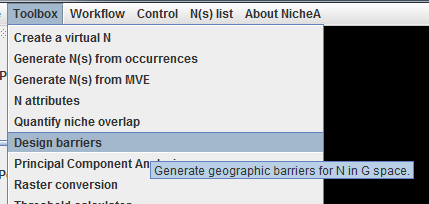
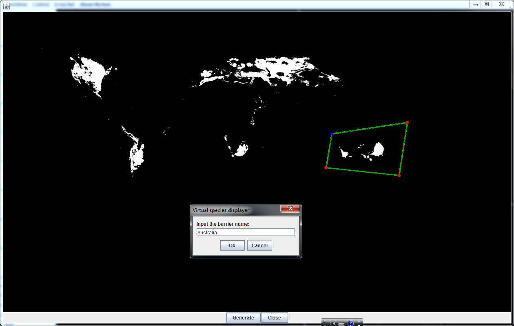
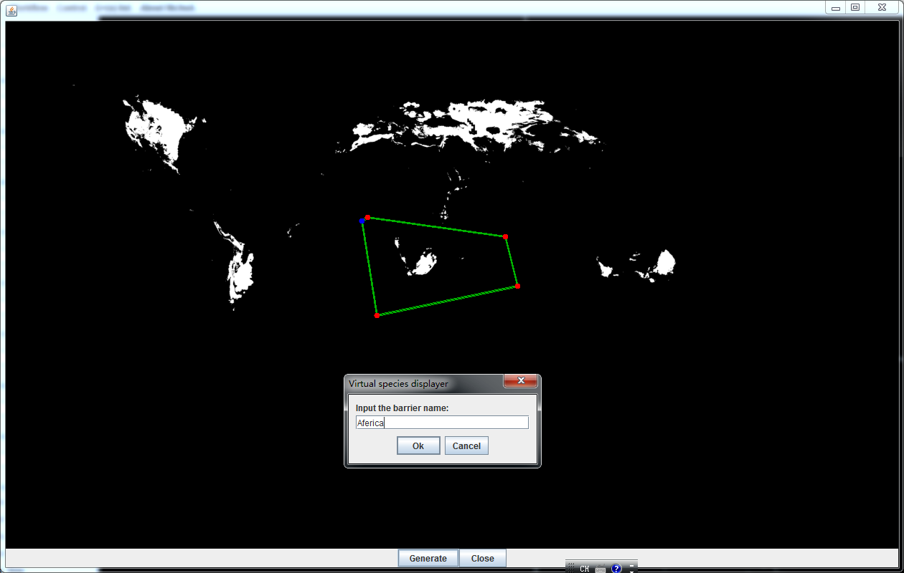
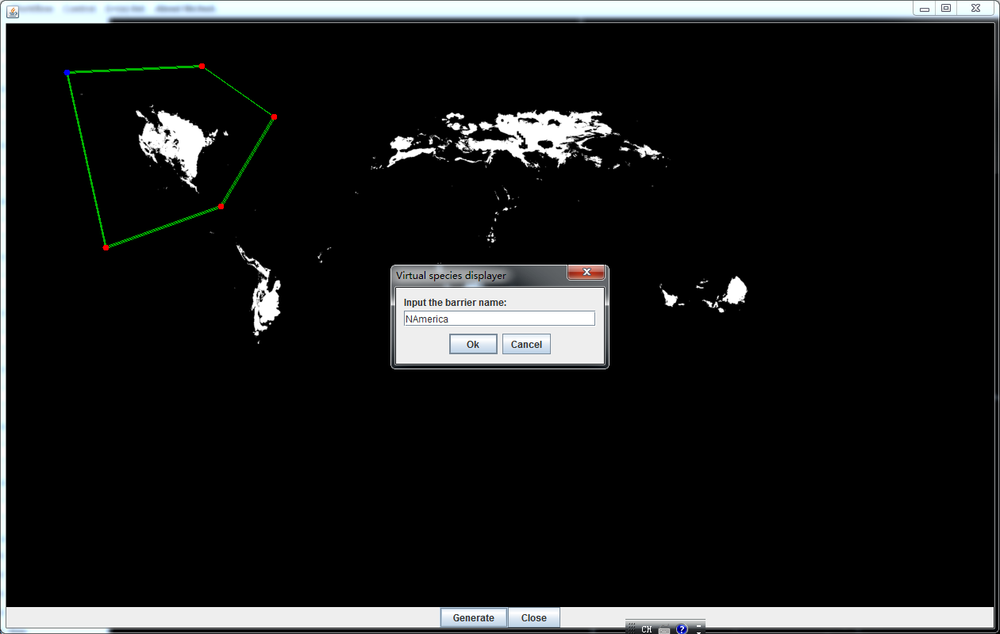
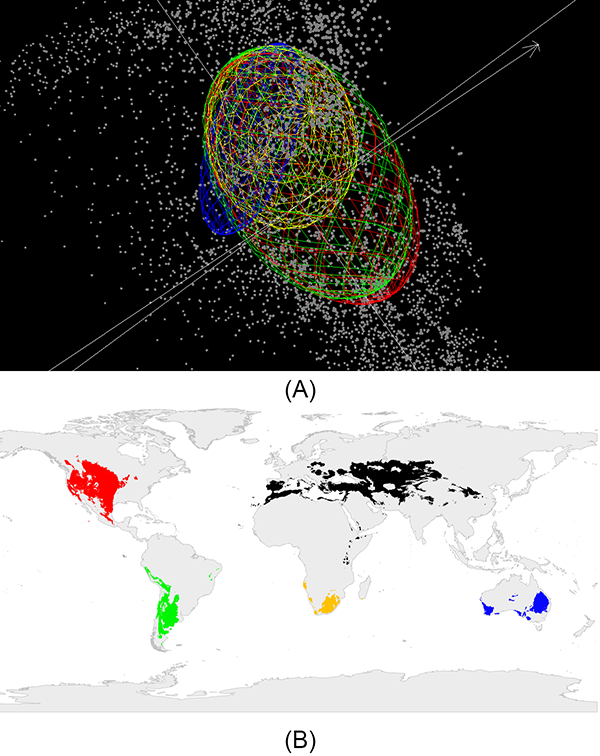
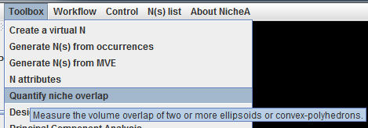
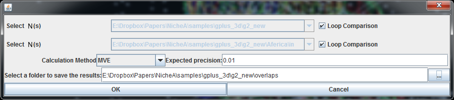

Using "Design barriers" tool to split virtual species into multiply parts, and quantifying the niche similarity between different parts
Note:
The data used in this case study can be downloaded via this link.
In section "Create barriers to separate a N into two Ns", we knew how to split a N into two parts in G space with "Design barriers" tool. In that section, we separated N No.2 into two parts in G space. But there was no significant differences in E space. In this section, we will split N No.2 into more parts, observe their features in E space, and quantify their niche similarity in NicheA.
First, we use the "Design barriers" tool (Fig.1 and 2) to separate N No.2 into four parts (Australia, Africa, North America and South America; Fig. 3 to 6). Then we open all these four separated Ns one by one. Fig. 7 shows the Ns in both E space and G space.
Then We use "Quantify Niche overlap" function (Fig. 8 and 9) to calculate the niche overlaps between every area-pair (Table.1).







| Origin | Australia | Africa | S America | N America | |
|---|---|---|---|---|---|
| Origin | 25.34 | 4.31 | 13.11 | 23.31 | 24.66 |
| Australia | 5.21 | 4.40 | 4.54 | 4.31 | |
| Africa | 15.43 | 13.46 | 13.12 | ||
| S America | 24.38 | 23.16 | |||
| N America | 24.71 |